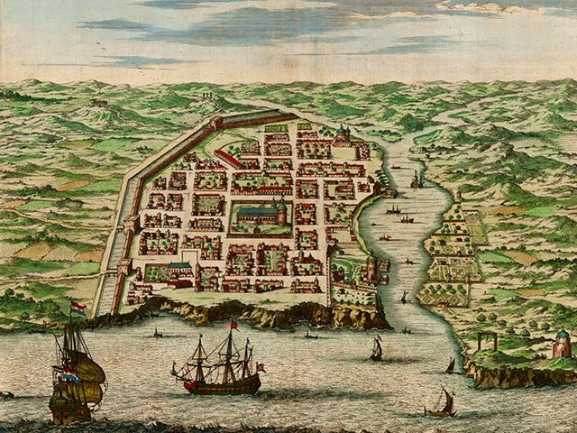

Urban Development
After forcefully displacing the Aztecs of present-day Mexico City, Hernán Cortés famously built his personal residence directly over the Aztec Emperor Montezuma's home near the central plaza of Mexico City, as a show of power. The grand designs we see in today’s colonial plazas were built with power in mind. Plazas served as commercial, religious, and administrative hubs. While Spanish elites were typically housed nearest the plaza, Indigenous populations were often forced to inhabit the less desirable barrios of the community.
Indigenous communities often found ways to reshape Spanish-imposed community designs. In some cases, the politically designed layers of authority within city wards were broken by the blending of neighborhoods, altering the intended social control of Spanish authorities. Despite Spanish attempts at social segregation, the lived reality of colonial cities was more fluid, with Indigenous residents adapting their living spaces.